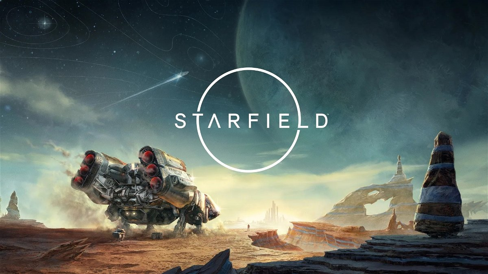
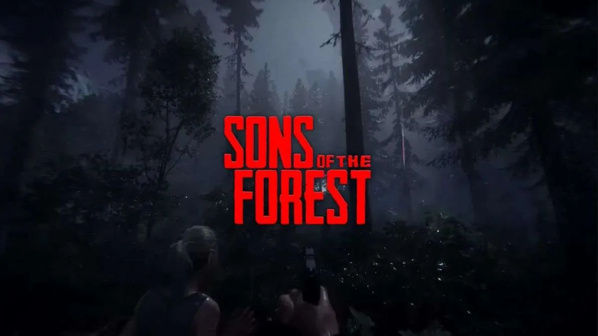
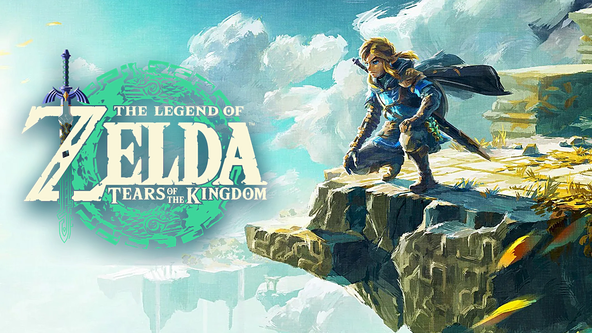

Starfield es un próximo videojuego de rol de ciencia ficción desarrollado por Bethesda Game Studios. Durante la conferencia de Microsoft + Bethesda del E3 2021, se reveló que Starfield se lanzará para Xbox Series y PC el 6 de septiembre de 2023.

Starfield — El proximo juego a salir de
este año

Sons of the Forest — La secuela de The
Forest
Sons of the Forest es un videojuego desarrollado por Endnight Games de terror y supervivencia, publicado por Newnight. Fue lanzado el 23 de febrero de 2023 mediante un acceso anticipado para Microsoft Windows. Es la secuela del popular videojuego de 2018 The Forest.

Zelda — Tears of the kingdom
The Legend of Zelda: Tears of the Kingdom es un videojuego de acción-aventura de 2023 de la serie The Legend of Zelda, desarrollado por la filial Nintendo EPD en colaboración con Monolith Soft y publicado por Nintendo para la consola Nintendo Switch.